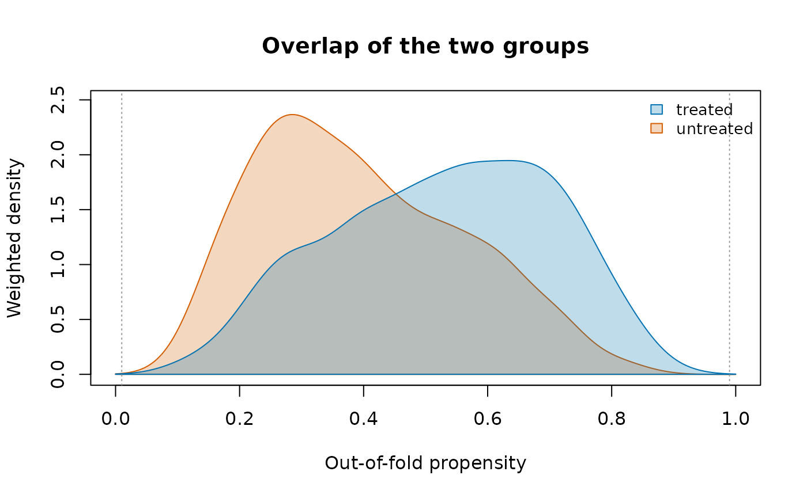
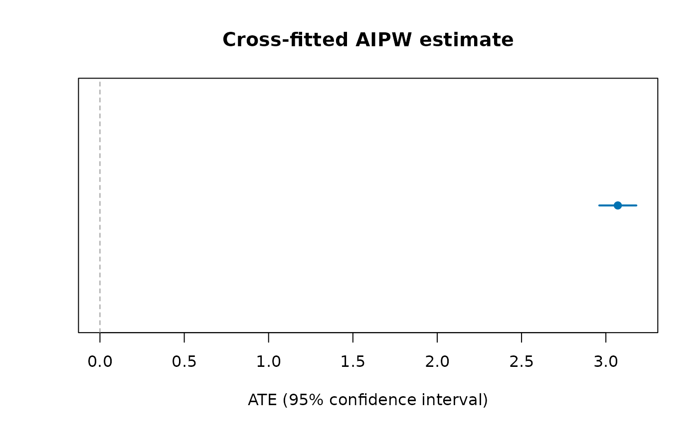
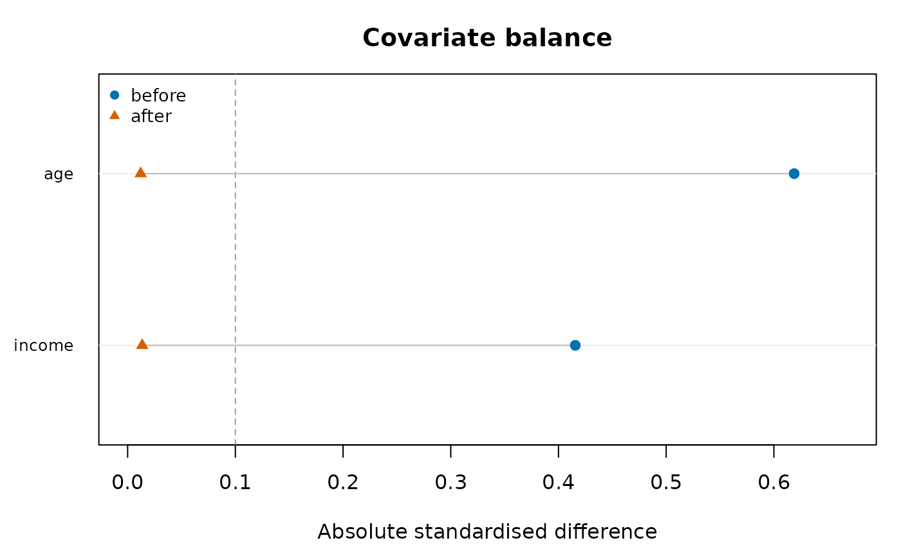

Causal effects with cross-fitted double machine learning
Source:vignettes/causal-effects.Rmd
causal-effects.Rmdplrcf() estimates the average effect of a treatment on
an outcome when the treated and the untreated differ in measured ways
(confounders). It fits the partially linear model
by the double machine learning recipe of Chernozhukov et al. (2018):
the outcome and the treatment are each predicted from the confounders
on folds the row was not part of (cross-fitting), and
is the regression of the outcome residuals on the treatment residuals
(DML2), with a sandwich standard error. When the effect is the same for
everyone,
is the average treatment effect (ATE); otherwise it is a
variance-weighted average of the individual effects.
exprspplr() bootstraps the same estimator for a continuous
exposure (see the air-pollution vignette). The nuisances
and
are ordinary least squares fits, so
is consistent when they are linear in the columns given; add squares,
interactions or splines as columns where they are not.
A known effect, recovered
Confounding biases the simple comparison; the cross-fitted estimate
removes it. Here the true effect of d on y is
2, and x1 drives both:
set.seed(42)
n <- 2000
sim <- data.frame(x1 = rnorm(n), x2 = rnorm(n))
sim$d <- rbinom(n, 1, plogis(1.5 * sim$x1))
sim$y <- 2 * sim$d + 3 * sim$x1 + sim$x2 + rnorm(n)
mean(sim$y[sim$d == 1]) - mean(sim$y[sim$d == 0]) # biased by x1
#> [1] 5.373073
fit <- plrcf(sim, "y", "d", c("x1", "x2"))
fit$ate
#> [1] 2.039439
fit$ate + c(-1.96, 1.96) * fit$se
#> [1] 1.938179 2.140699The NSW job-training experiment, and what observational data can recover
LaLonde (1986) took the National Supported Work Demonstration, a
randomised job-training programme of the 1970s, and asked whether the
econometric methods of the day could recover its experimental effect on
1978 earnings when the randomised controls are replaced by a survey
sample (the PSID). Dehejia and Wahba (1999) kept the men with 1974
earnings: 185 treated, 260 randomised controls, and 2,490 PSID-1
comparison men. The three files are on data.rmorie.com
(rmbl login once), checked against the SHA-256 the manifest
lists:
Or, without signing in, from Rajeev Dehejia’s own pages (whitespace-separated text):
cols <- c(
"treat",
"age",
"educ",
"black",
"hisp",
"married",
"nodegree",
"re74",
"re75",
"re78"
)
nber <- function(f) {
dest <- file.path(tempdir(), f)
bldl(paste0("https://users.nber.org/~rdehejia/data/", f), dest)
stats::setNames(utils::read.table(dest), cols)
}
tr <- nber("nswre74_treated.txt")
ct <- nber("nswre74_control.txt")
ps <- nber("psid_controls.txt")The PSID men are older, more often married and earned about nine times as much before the programme; the randomised controls look like the treated:
| Mean | age | educ | black | married | nodegree | re74 | re75 |
|---|---|---|---|---|---|---|---|
| Treated | 25.82 | 10.35 | 0.84 | 0.19 | 0.71 | 2,095.57 | 1,532.06 |
| Randomised controls | 25.05 | 10.09 | 0.83 | 0.15 | 0.83 | 2,107.03 | 1,266.91 |
| PSID controls | 34.85 | 12.12 | 0.25 | 0.87 | 0.31 | 19,428.75 | 19,063.34 |
The experimental benchmark, and the same question asked of the observational sample:
x <- c("age", "educ", "black", "hisp", "married", "nodegree", "re74", "re75")
exp <- rbind(tr, ct)
obs <- rbind(tr, ps)
mean(tr$re78) - mean(ct$re78) # the experiment
mean(tr$re78) - mean(ps$re78) # treated against the PSID, unadjusted
plrcf(exp, "re78", "treat", x)
plrcf(obs, "re78", "treat", x)
plrcf(obs, "re78", "treat", x, kfol = 10, seed = 2)Run on 15 October 2026 (1982 US dollars of 1978 earnings):
| Sample and estimator | Effect | Standard error | 95% interval |
|---|---|---|---|
| Experiment, difference in means | 1,794.3 | ||
Experiment, plrcf()
|
1,695.9 | 680.8 | 361.5 to 3,030.2 |
| Treated vs PSID, difference in means | -15,204.8 | ||
Treated vs PSID, plrcf()
|
618.3 | 791.1 | -932.3 to 2,168.9 |
Treated vs PSID, plrcf(), 10 folds, seed 2 |
748.4 | 777.5 | -775.5 to 2,272.3 |
Adjusting for the eight pre-programme covariates turns a
fifteen-thousand-dollar penalty into a small positive effect whose
interval covers the experimental one, though it sits well below it and
is far less precise. Two things limit it. The nuisances are linear, so
the large earnings gap is adjusted for only as a straight line; and the
overlap is thin: most PSID men earned more before the programme than
almost any treated man, so the comparison rests on the few who look like
them. Dehejia and Wahba show that trimming the comparison group to the
region of common support (on an estimated propensity score) brings the
observational estimate close to the experiment; with
plrcf(), restrict obs to that region before
fitting. The cross-fit split moves the estimate by about a sixth of a
standard error, which is why the seed and the number of folds are
arguments.
Overlap and balance
Two checks belong with every weighting estimate: whether the two groups overlap (each person has a real chance of either treatment) and whether weighting balances the covariates. On simulated data, where the true effect is 3:
set.seed(7)
n <- 1500
d <- data.frame(age = runif(n, 18, 70), income = rnorm(n))
d$t <- rbinom(n, 1, plogis(-2 + 0.04 * d$age + 0.5 * d$income))
d$y <- 10 + 3 * d$t + 0.2 * d$age + d$income + rnorm(n)
fit <- aipwcf(d, "y", "t", c("age", "income"), lrn = "ols")
fit
#> ╭── Cross-fitted AIPW ────────────────────────────────────────────────────╮
#> │ Estimand ATE │
#> │ Rows 1,500 │
#> │ Treated 684 │
#> │ Propensity range [0.0856, 0.9030] │
#> │ Clipped at 0.01 │
#> │ Clipped 0 │
#> │ Variance influence function │
#> │ Confidence 95% │
#> │ │
#> │ estimand estimate se 95% CI p_value │
#> │ -------- -------- ------- -------------- ------- │
#> │ ATE 3.071 0.05606 [2.961, 3.181] < 0.001 │
#> │ │
#> │ The ATE is 3.071 (95% interval [2.961, 3.181]): the interval excludes │
#> │ 0, so the data distinguish it from no effect. │
#> │ │
#> │ Outcome and propensity models are fitted out of fold; the estimate is │
#> │ consistent if either is right. │
#> ╰─────────────────────────────────────────────────────────────────────────╯
plot(fit)
plot(fit, type = "estimate")
pr <- attr(fit, "propensity")
e <- pmin(pmax(pr$propensity, 0.01), 0.99)
d$ipw <- ifelse(d$t == 1, 1 / e, 1 / (1 - e))
plot(baltab(d, "t", c("age", "income")),
after = baltab(d, "t", c("age", "income"), w = "ipw"))
The groups overlap where both curves have mass; after weighting, both covariates fall below the 0.1 line.
Indigenous examples
The person-level questions this vignette is about (does a strong
sense of belonging go with better mental health once circumstances are
held equal?) need the survey microdata, which Statistics Canada
distributes as a public use file; aipwcf() with
design = svydes(...) takes its bootstrap weights directly.
The published tables bundled with the package support the group-level
questions; for those see
vignette("first-nations-metis-inuit-health"). A comparison
of the published estimates themselves:
hi <- indiex("health")
x <- hi[hi$period == "2019/2022" & hi$age == "Total, 18 years and over" &
hi$indicator == "Perceived mental health, very good or excellent", ]
indgap(x, "group", "estimate", "lower", "upper", qual = "quality")[
, c("group", "estimate", "refest", "difference", "diflo",
"difup")]
#> group estimate refest difference diflo difup
#> 1 First Nations 45.8 61.5 -15.7 -18.53593 -12.864070
#> 2 Métis 52.8 61.5 -8.7 -11.58531 -5.814692
#> 3 Inuit 47.8 61.5 -13.7 -20.16568 -7.234321References
Chernozhukov, V., Chetverikov, D., Demirer, M., Duflo, E., Hansen, C., Newey, W. and Robins, J. (2018). Double/debiased machine learning for treatment and structural parameters. The Econometrics Journal 21(1), C1-C68.
Dehejia, R. H. and Wahba, S. (1999). Causal effects in nonexperimental studies: reevaluating the evaluation of training programs. Journal of the American Statistical Association 94(448), 1053-1062.
LaLonde, R. J. (1986). Evaluating the econometric evaluations of training programs with experimental data. American Economic Review 76(4), 604-620.